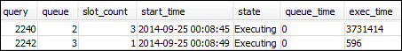
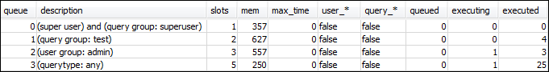
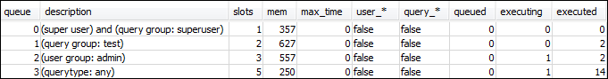
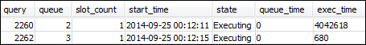

本文為英文版的機器翻譯版本，如內容有任何歧義或不一致之處，概以英文版為準。
第 4 節：使用 wlm_query_slot_count 暫時覆寫佇列中的並行層級
有時候使用者可能暫時需要較多資源來處理特定查詢。如果是這種情況，他們可以使用 wlm_query_slot_count 組態設定來暫時覆寫查詢佇列配置槽的方式。槽是用於處理查詢的記憶體和 CPU 的單位。當您有偶爾會佔用叢集中大量資源的查詢，例如在資料庫中執行 VACUUM 操作，可以覆蓋槽計數。
您可能發現使用者經常需要為某些類型的查詢設定 wlm_query_slot_count。若是如此，請考慮調整 WLM 組態，並提供更符合查詢需求的佇列給使用者。如需使用槽計數暫時覆寫並行層級的詳細資訊，請參閱 wlm_query_slot_count。
步驟 1：使用 wlm_query_slot_count 覆寫並行層級
基於本教學課程的目的，我們將執行相同的長時間執行 SELECT 查詢。我們會以 adminwlm 使用者的身分執行，使用 wlm_query_slot_count 增加查詢可使用的槽數量。
使用 wlm_query_slot_count 覆寫並行層級
-
增加查詢限制量，以確保您有足夠的時間查詢 WLM_QUERY_STATE_VW 檢視圖並查看結果。
set wlm_query_slot_count to 3; select avg(l.priceperticket*s.qtysold) from listing l, sales s where l.listid <40000; -
現在，使用管理員使用者查詢 WLM_QUERY_STATE_VW 來查看查詢的執行狀況。
select * from wlm_query_state_vw;以下是結果範例。
請注意，查詢的槽計數是 3。此計數表示查詢會將三個槽都用來處理查詢，將佇列中的所有資源配置給該查詢。
-
現在，執行下列查詢。
select * from WLM_QUEUE_STATE_VW;以下是結果範例。
wlm_query_slot_count 組態的設定只在目前的工作階段中有效。如果工作階段過期，或是有其他使用者執行查詢，則會使用 WLM 組態。
-
重設槽計數，然後重新執行測試。
reset wlm_query_slot_count; select avg(l.priceperticket*s.qtysold) from listing l, sales s where l.listid <40000;以下為結果範例。

步驟 2：從不同工作階段執行查詢
接下來，請從不同工作階段執行查詢。
從不同工作階段執行查詢
-
在第 1 和第 2 個 RSQL 視窗中，執行下列查詢以使用 test 查詢群組。
set query_group to test; -
在第 1 個 RSQL 視窗中執行下列長時間查詢。
select avg(l.priceperticket*s.qtysold) from listing l, sales s where l.listid <40000; -
由於長時間執行的查詢仍在第 1 個 RSQL 視窗中進行，請執行下列命令。這些命令會提高槽計數來使用佇列的所有槽，然後開始執行長時間執行的查詢。
set wlm_query_slot_count to 2; select avg(l.priceperticket*s.qtysold) from listing l, sales s where l.listid <40000; -
開啟第 3 個 RSQL 視窗，查詢檢視並查看結果。
select * from wlm_queue_state_vw; select * from wlm_query_state_vw;以下為結果範例。


請注意，第一個查詢使用已配置給佇列 1 的其中一個槽來執行查詢。此外，請注意有一個查詢在佇列中等待 (其中，
queued是1，state是QueuedWaiting)。第一個查詢完成後，第二個查詢就會開始執行。發生此執行是因為兩個查詢都路由到test查詢群組，第二個查詢必須等到有足夠的槽才能開始處理。